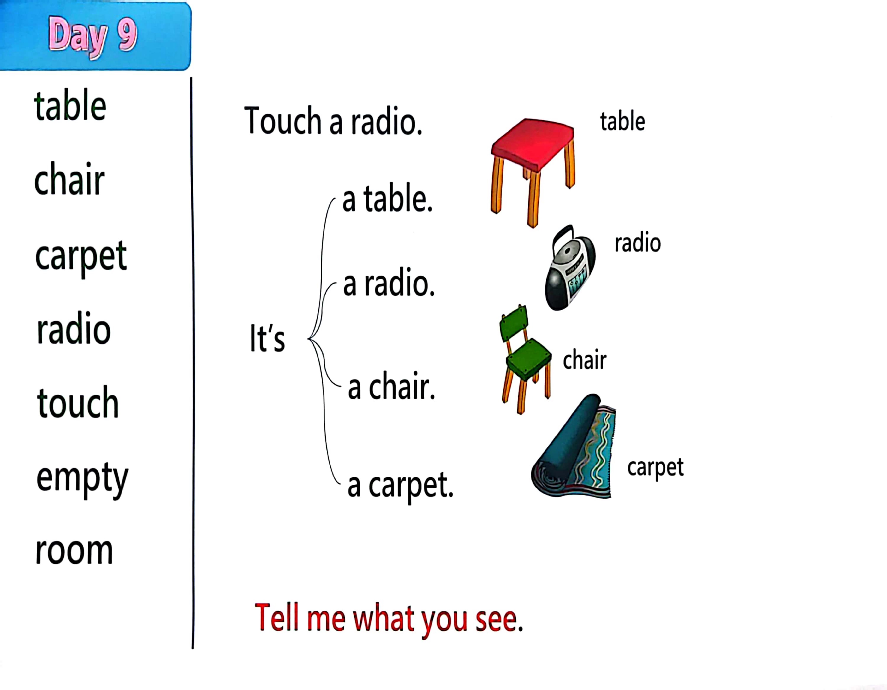

Day 9
Unit 3 · song
教材重点
教材重点依据网盘文件“第二级蓝色每日打卡全.pdf”，第 10 页对应 Day 9；保留文字整理并同时提供原图。
网盘教材重点原图 · PDF 第 10 页对应 Day 9
a radio. I t’s a table. a chair. table chair carpet radio touch empty room a carpet. Touch a radio. Tell me what you see. chair table carpet radio

Unit 3 · song · 4–6岁
see · sing · hello · look
Hello, again, what can you see Look.
台词本为机器转写，可能存在识别误差；不等同于视频逐字原声。
详细内容
Part 1 核心词汇
必须掌握 · 4 个Part 2 跟读句型与句型拓展
左侧保留台词本原句，右侧为替换练习；拓展内容不是视频逐字台词。
Hello, again, what can you see Look.
Touch your table, table.
Touch your table. Sing along with me.
It's a table, it's a table, it's a table.
Tell me what you see.
Part 3 台词本全文
来源：第2级台词本 · 009.Wow!Blue - Unit 3 - part 2 song.pdf。以下保留网盘 PDF 的机器转写文本，仅清理了文件路径页眉和空行。
Hello, again, what can you see Look.
Touch your table, table.
Touch your table. Sing along with me.
It's a table, it's a table, it's a table.
Tell me what you see.
Check.
Touch your Jazz sings along with me.
It's our chances.
In time.
Tell me what you see. The carpet.
The carpet, carpet, carpet touch the.
A pit sing along with me. It is so copper, it's.
It is.
Copy to tell me what you see. The radio.
Radio, radio touch. The.
A radio sing along with me.
In summer radio, it's a radio. Instead.
Radio, tell me what you see. Table table,
Carpet homage, radio, radio, sing along, sing along with me.
Bye bye, see you soon.